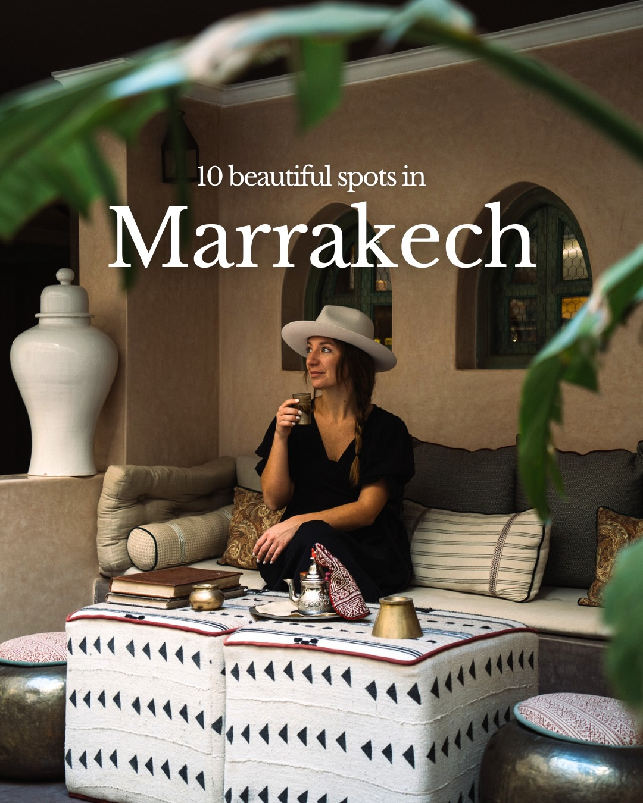
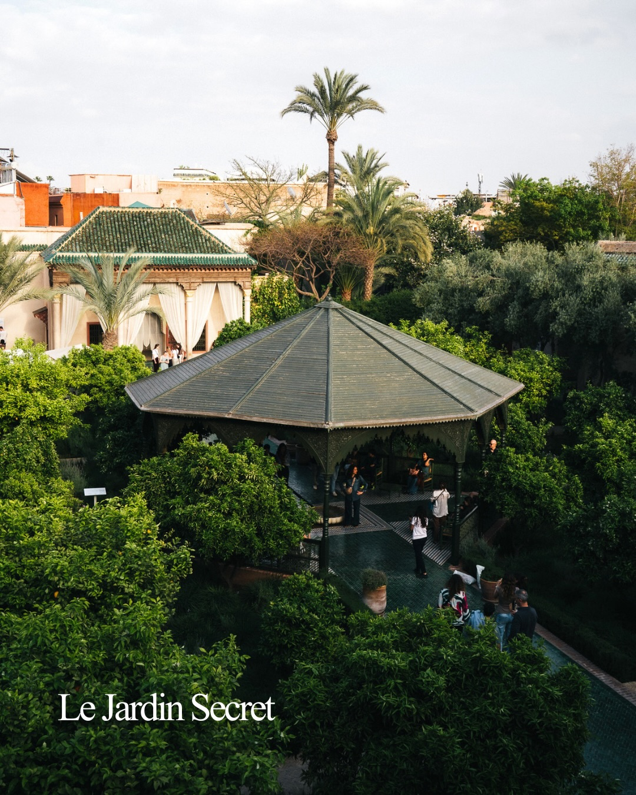
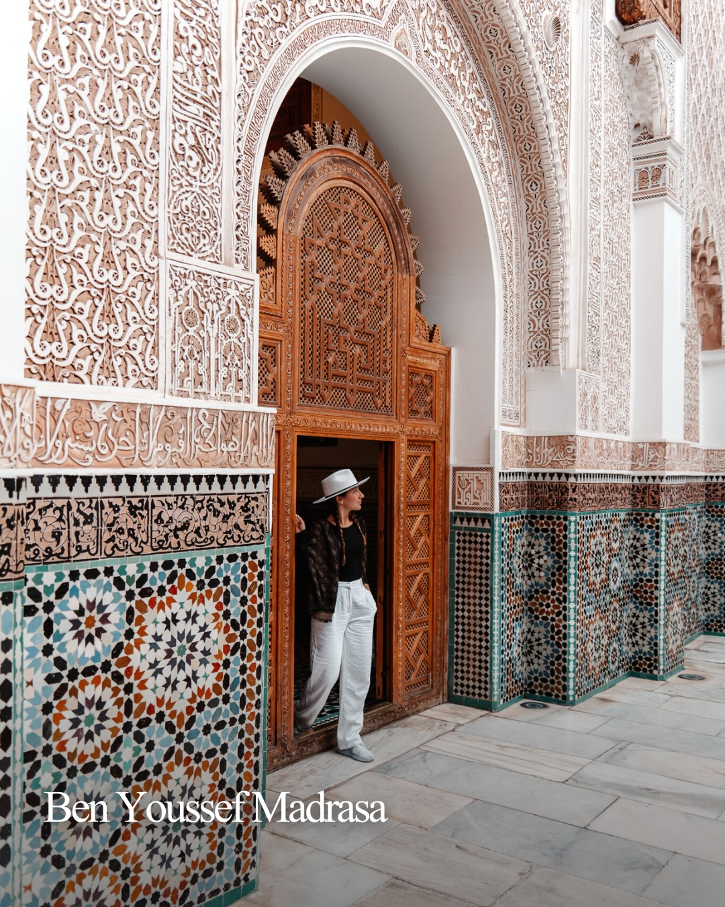
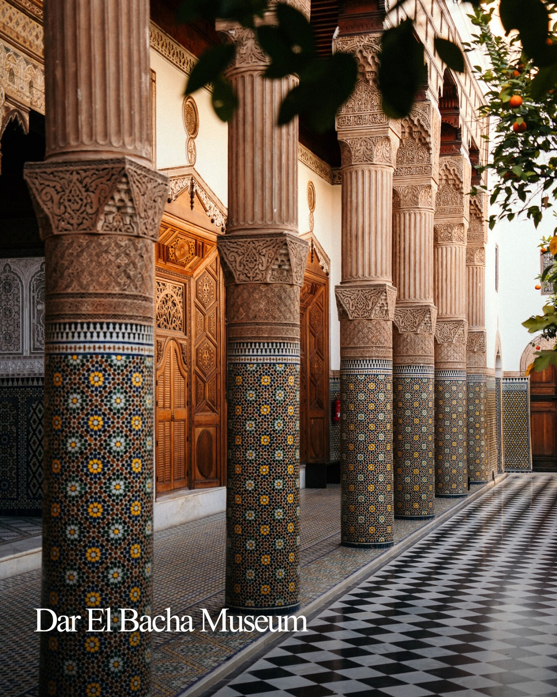
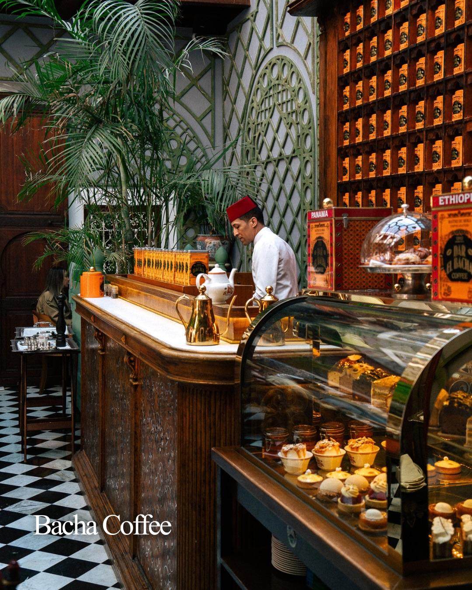
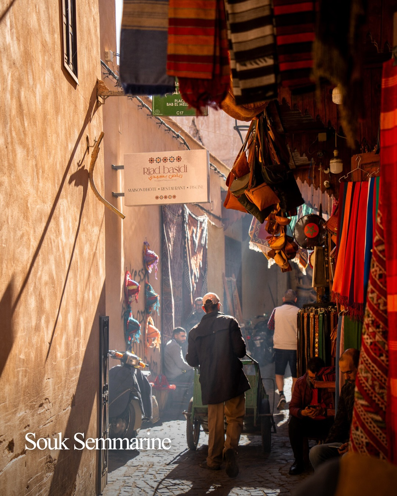
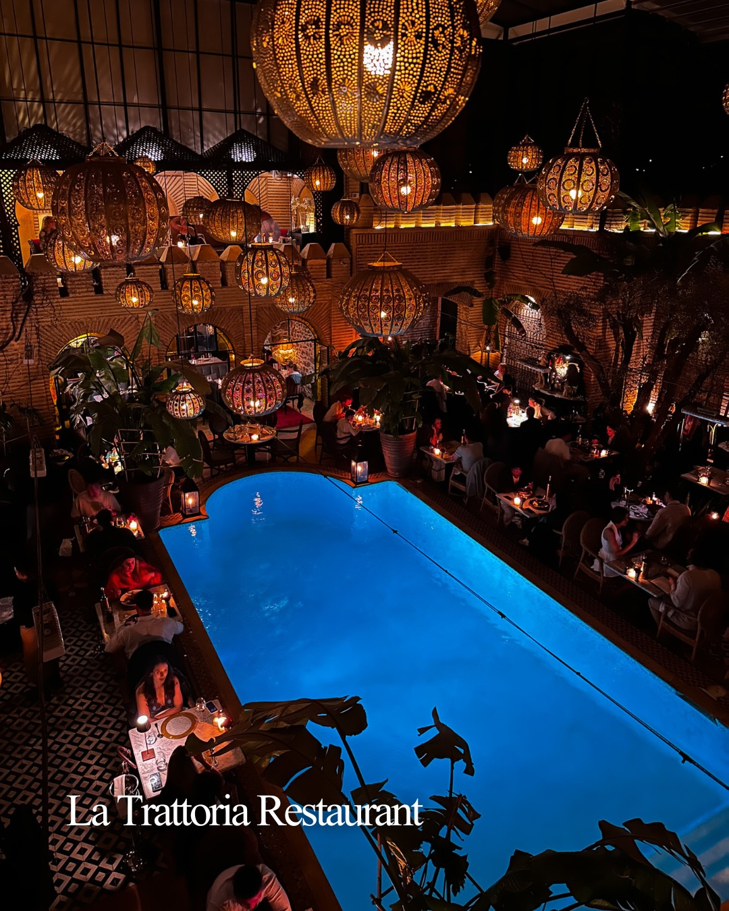
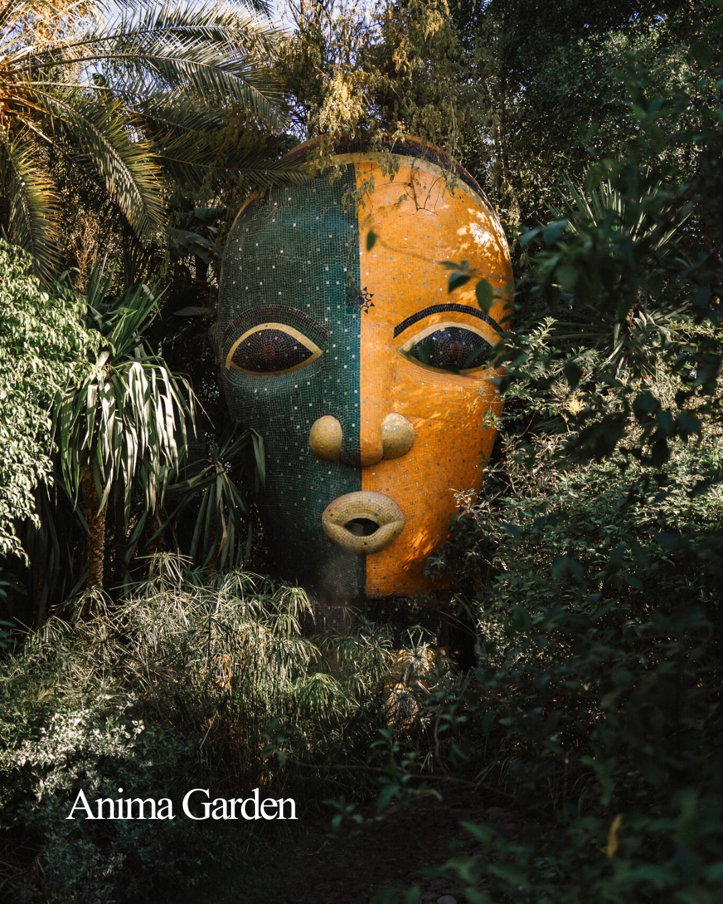
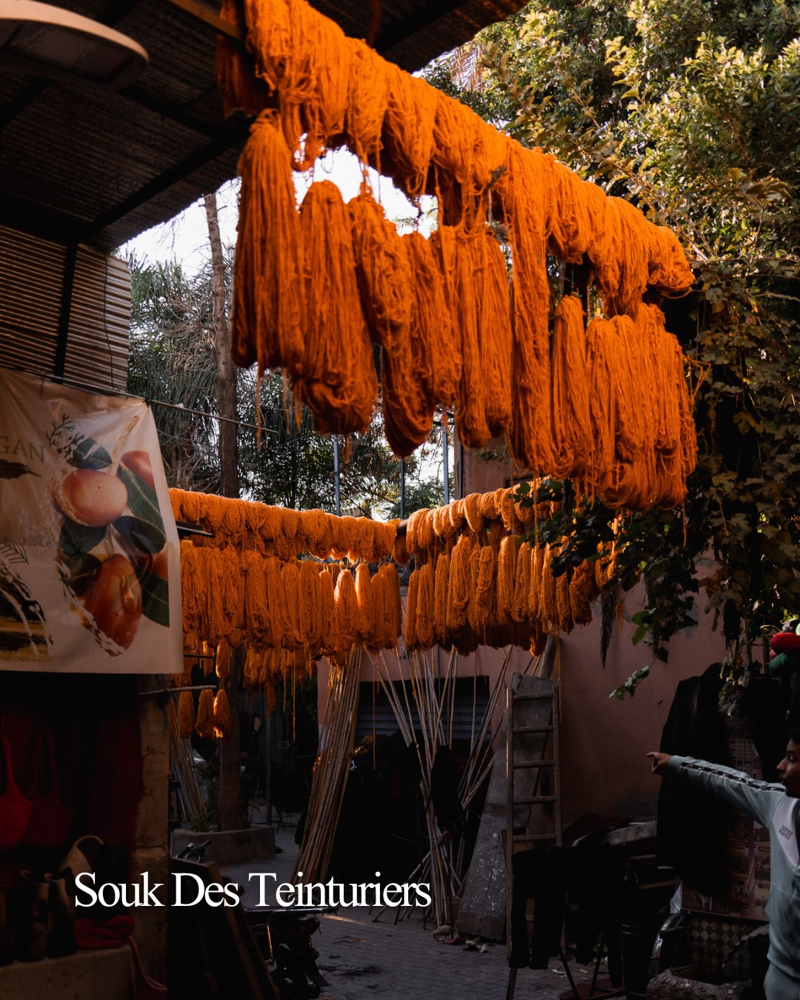

Instagram Post

10 spots in Marrakech you absolutely cannot miss...
carousel (10 slides) (enriched by ClaudeClaw)
Summary
10 beautiful spots in Marrakech | Le Jardin Secret | Ben Youssef Madrasa | Dar El Bacha Museum | Bacha Coffee PANAMA ETHIOPIA THE BAR EL BACHA COFFEE | BAB EL MEL C17 ooooo Riad basidi رياض باسيدي MAISON D'HÔT... | La Trattoria Restaurant | Anima Garden | Souk Des Teinturiers | El Badi Palace
Caption
10 spots in Marrakech you absolutely cannot miss 🇲🇦
This city is something else: the colors, the history, the food, the energy… it just pulls you in completely 🥹 how many have you been to?
👉 Comment “SOUK” and we’ll send you a link to our Morocco travel guide with ready-made itineraries, the best stays, cafés, and hidden gems we genuinely loved!
Le Jardin Secret
Ben Youssef Madrasa
Dar El Bacha Museum
Bacha Coffee
Souk Semmarine
La Trattoria ( @latrattoriamarrakech )
Anima Garden ( @animagardenofficial )
Souk des Teinturiers
El Badi Palace
Bahia Palace
These riads 🥹
@riadsakkan
@riadbotanica
@bemarrakech
@riadabracadabra
Save this for your trip to Morocco
& follow us for more travel content!❤️
best of Marrakech, Marrakech travel guide
#Marrakech #MarrakechTravel #VisitMorocco #MoroccoTravel #MarrakechGuide”
1
10 beautiful spots in Marrakech
A woman wearing a hat and a black dress sits on a cushioned bench, holding a drink, in a room with traditional decor, including patterned ottomans, a teapot, and arched windows.
2
Le Jardin Secret
An aerial view shows a lush green garden with a dark-roofed gazebo where people are gathered, surrounded by dense foliage, traditional buildings with green tiled roofs, and palm trees under a bright sky.
3
Ben Youssef Madrasa
A person wearing a white hat and white pants stands in an intricately carved wooden doorway within a building adorned with white carved walls and colorful geometric mosaic tiles.
4
Dar El Bacha Museum
A long hallway or courtyard features a row of ornate columns with carved details and mosaic tile bases, a black and white checkered floor, and carved wooden doors in the background, with a branch of an orange tree visible on the right.
5
Bacha Coffee PANAMA ETHIOPIA THE BAR EL BACHA COFFEE
An ornate coffee shop interior features a barista in a red fez behind a counter, shelves of coffee boxes, a display case with pastries, and a black and white checkered floor.
6
BAB EL MEL C17 ooooo Riad basidi رياض باسيدي MAISON D'HÔTE • RESTAURANT • SPA ooooo Souk Semmarine
A narrow, sunlit alleyway in a bustling market is filled with people, shops displaying colorful textiles, and a sign for "Riad basidi".
7
La Trattoria Restaurant
An aerial view of a restaurant at night, featuring a bright blue swimming pool surrounded by dining tables with patrons, and numerous ornate, illuminated lanterns hanging from the ceiling.
8
Anima Garden
A large, colorful, stylized human face sculpture, split vertically into green and orange halves, is nestled among dense green foliage and palm trees in an outdoor garden.
9
Souk Des Teinturiers
Bundles of orange yarn hang to dry from overhead structures in an outdoor market or workshop, with a person pointing on the right and foliage in the background.
10
El Badi Palace
An aerial view of the ruins of El Badi Palace, featuring tall, reddish-brown walls and a courtyard floor covered in intricate blue, white, and brown geometric mosaic tiles.
All slides







